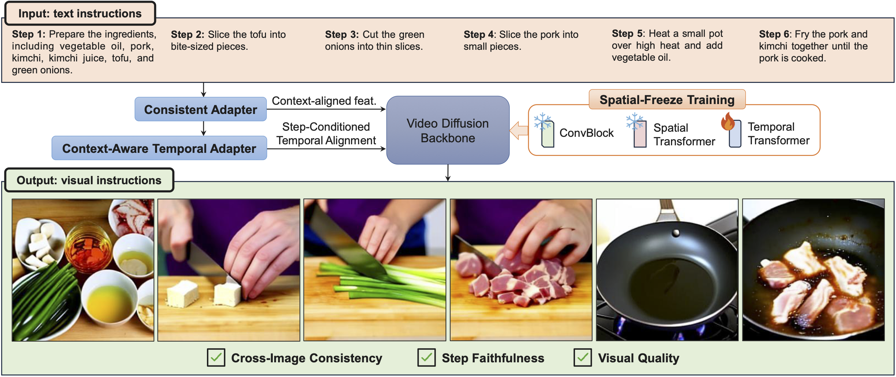

ECCV 2026 Accepted
Improving Image-to-Image Translation via a Rectified Flow Reformulation
†Equal contribution.
岡本 瞬

†Equal contribution.


Please see the Japanese page for domestic conference presentations.